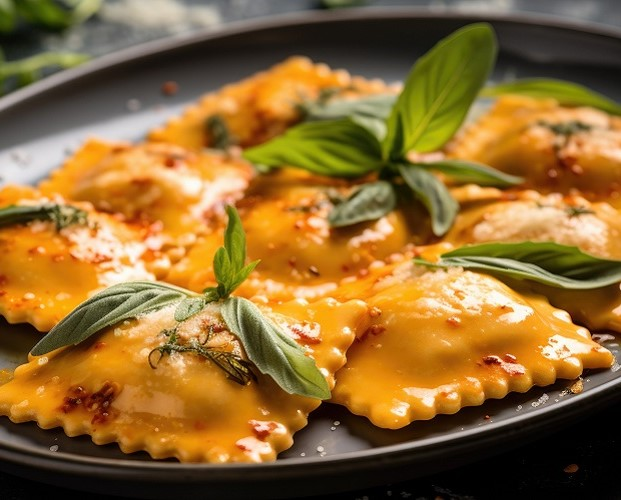

Meni
Pogledajte naš ukusni meni
- Sve
- Salate
- Juhe
- Rissoto
- Pasta
- Riba
- Odresci

Salata od hobotnice23.00KM
Salata od hobotnice sa cherry rajčicama, kaparima, crvenim lukom i ekstra djevičanskim maslinovcim uljem
Kremasti rižoto od repova kozica obogaćen je listićima Grana Padana, stvarajući savršenu harmoniju bogatog morskog okusa i delikatnog sira
Rižoto s piletinom obogaćen hrskavim čipsom od pancete pruža savršenu kombinaciju kremaste teksture rižota i intenzivne arome dimljene pancete
Crni rižoto s lignjama i listićima Grana Padana kombinira intenzivni okus morskih plodova s bogatstvom Grana Padana sira, stvarajući jedinstvenu i zadovoljavajuću gastronomsku harmoniju.
Teleći odrezak20.00KM
Teleći odrezak je majstorski pripremljen, s nježno pečenim komadom telećeg mesa obogaćenim začinima koji naglašavaju njegovu prirodnu sočnost i aromu.
Panirani teleći odrezak punjen sirom i pršutom je ukusno jelo koje kombinira nježni teleći odrezak s bogatim sirom i aromatičnim pršutom, omotan u hrskavi panir.
Antica18.50KM
Svinjski vrat sa žara s aromatiziranim maslacem, panceta, pečeni krumpir, gljive, paprika


Domaći ravioli s kozjim sirom i crnim maslinama spajaju kremasti kozji sir s pikantnim crnim maslinama za bogat mediteranski okus.
File lososa38.00KM
File lososa s aromatiziranom palentom u kremastom umaku od limuna i naranče je gurmanski užitak koji spaja sočni losos s mirisnom palentom i osvježavajućim citrusnim umakom.
Tuna steak32.00KM
Tuna steak mariniran u anisu s pireom od paprike uz julienne povrće je sofisticirano jelo koje spaja bogati okus tune s aromatičnim anisom, kremastim pireom od paprike i svježim julienne povrćem.
Lignje s rižotom od špinata20.50KM
Lignje s rižotom od špinata kombiniraju nježno kuhane lignje s kremastim rižotom obogaćenim svježim špinatom za savršeno balansiran morski okus.
Krem juha od rajčice5.00KM
Krem juha od rajčice je bogata, baršunasta juha napravljena od svježih rajčica, začinjena aromatičnim začinima za savršen balans slatkog i kiselog okusa.
Krem juha od bundeve6.00KM
Krem juha od bundeve je baršunasta i bogata juha napravljena od slatke bundeve, aromatičnih začina i vrhnja, savršena za hladnije dane.
Spaghetti Bolognese14.50KM
Spaghetti Bolognese su klasično talijansko jelo koje spaja savršeno kuhane špagete s bogatim, mesnim umakom od rajčice, začinjenim aromatičnim biljem i začinima.
Spaghetti Carbonara15.50KM
Spaghetti Carbonara su klasično talijansko jelo napravljeno od savršeno kuhanih špageta, kremastog umaka od jaja i parmezana, hrskave pancete i svježeg crnog papra.
Tortelini s 4 vrste sira14.50KM
Tortelini s 4 vrste sira su ukusna tjestenina punjena bogatom mješavinom kremastih i aromatičnih sireva, savršena za ljubitelje intenzivnih sirnih okusa.